Form
Created sabato 21 febbraio 2015
Forms template
To create an application in LibreOffice Base you need to learn to operate with forms. Move to the forms view and create a nice looking template.
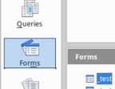
MainForm
Always create a MainForm which may contain other sub-forms connected, this also allows to have master-detail interface, this is clearly explained in the Base Handbook.
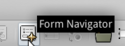 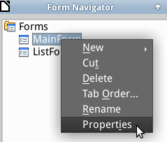
Empty form
Select forms view and click on “Create Form in Design View”, click on “Form Navigator” to add to our new empty form other two forms called “MainForm” and “ListForm”. Right click on “Properties” of the “MainForm” and connect data to table “_test”, repeat for “ListForm” and connect to table “_test_Customers”.
Data operations
For both forms do not show “navigation Bar” and for “ListForm” deactivate also other operations to data.
 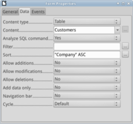
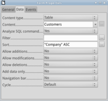
Add fields
Click on the “Add Field” and add all available fields beside “ID” from “_test” table, don't worry about type because you may change with right click selecting “Replace with”.
Now your form should look similar to this, add a “Navigation Bar” from “More controls” and customize like our example. Set width property to larger value like 5,70” and height to 0,39”.
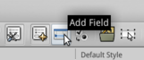 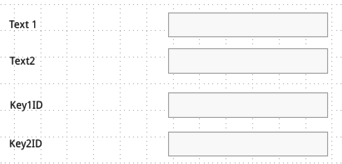
Navigation bar
Look for “More Controls” to a navigation bar, style properly with white background, no frame and hide filter/search.
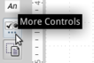 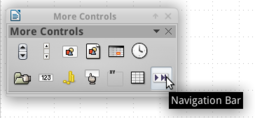
For this tutorial we set our forms with first line as a name/description of the master data, the second line as navigation bar.
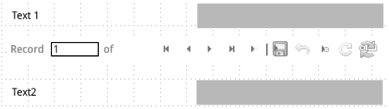
Now save and give the name “_test”, double click to run.
Colors
Add your favorite colors from menu Options → Options, for this tutorial add the color rgb 52,152,219 and rbg 34,104,147 and give a name to remember and use later on.
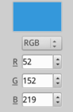
Background
Our form looks nice but let's change the background of the page, from menu Format → Page → Background and select your previously created light blue color.
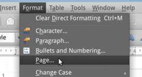
Activate the drawing toolbar from menu View → Toolbars → Drawing.

Now draw a white rectangle and send to background, this will be the main content area. Repeat on the top to create a header with the darker blue color previously created. From menu Insert → Image add your favorite logo, re-size properly to fit the header. Add a label, enlarge font and set color to white write “Form Title”, center it. To complete the style of the form, set “Icons” of navigation bar to large, hide “Sort”, change background of each field to “Gray 2” and deactivate frame border.
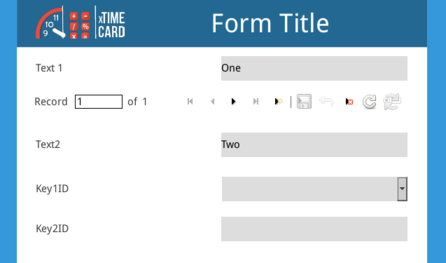
Anchor
As you may expect, pay attention when you deploy controls in the form; just like a word processor or a web page these controls need to be placed with an anchor. Remember to anchor properly, start with a wider anchor like “Page” and pay attention to the position X and Y.
List-box
Right click “Key1ID”, ungroup (separate from the label) and replace the text field control with a listbox.
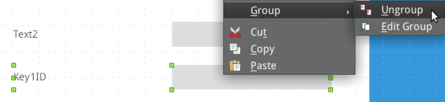
Right click and select “Replace with” and choose “List Box”, again right click and select “Control” to change properties.
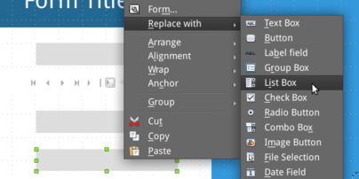
Drop-down list
Activate drop-down and go to tab “Data” to create SQL query to list from table “Countries”.
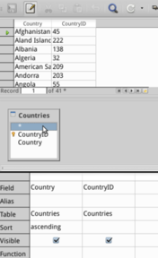
SQL to list content
Move to data to create a SQL query to list available projects. You may simply choose SQL and add this code:
Run your form and check the list box to properly show the name of all countries but save the “CountryID” in the “_test” table.
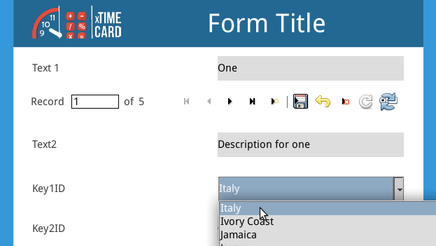
Check record value
Click on “Save” button and go to “tables” and look into the table, for instance “Italy” is record 22.
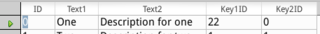
For this template we are almost done, next we will add a grid and connection between sub-forms (master-detail interface).
Grid
Drag a “Grid” control from the “More controls” dialog to our template form, draw a square in the lower frame. Pay attention to have your grid below “ListForm”, check in the “Navigator” or drag to set the proper level.
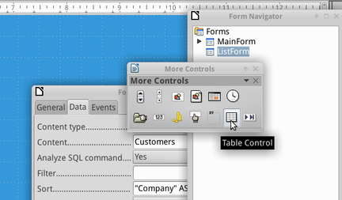
Right click on the control form the “Navigator” and select “Properties”. Set a nice “Gray1” background, give a flat appearance and call it “Grid1”. When you run your form, the list of your customers will be shown, for this tutorial review the sample data.
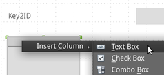
To columns to the grid, right click on the header and choose to insert “Text Box” connected to the fields “Company”, “Name”, “Email” and “Taxcode”.
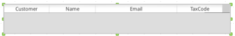
Save, run and see your customers shown in the grid, for this tutorial we would to connect the field “Key2ID” to this grid (therefore we will see only one row).
Master-detail interface
To learn on how to connect a form to a sub-form and create the master-detail relation, let's start by opening the form “Navigator” and move the “ListFrom” under the “MainForm”.
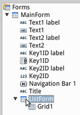 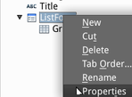
Set relation
Right click for properties and set the relation between the tables “_test” and “_test_Customers” by linking field “Key2ID” to field “CustomerID”.
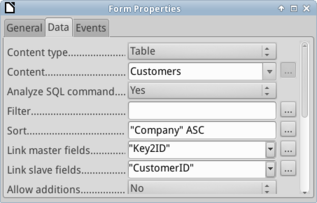
Review
Save and run your form, notice now the grid shows only the proper customer record.
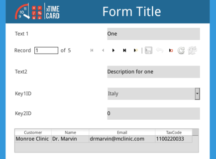
Now your form template looks nice, generally speaking the upper right may contain important information as our attention is often driven by “Z”.
@base @xtimecard @customize
Backlinks:
Home:Software:xTimeCard:Customize